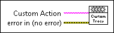

Generate Custom Trace VI
Owning Palette: Advanced VIs (Actor Framework)
Requires: Base Development System
Generates a DETT (Desktop Execution Trace Toolkit) User Generated Trace. The trace includes the source actor's ID (or debug alias, if available) and a custom message you define.

 Add to the block diagram Add to the block diagram |
 Find on the palette Find on the palette |